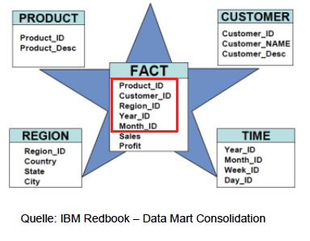
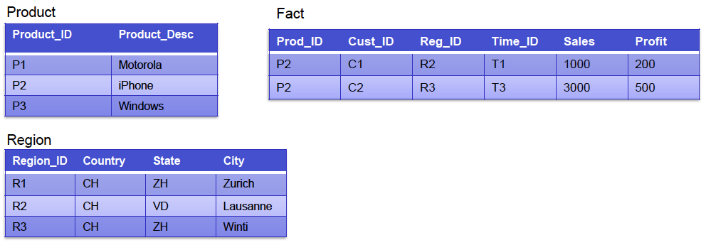
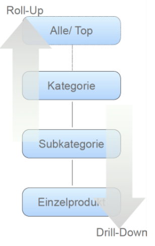
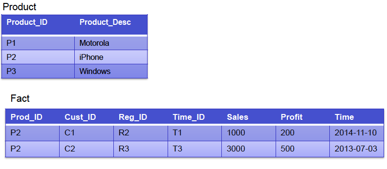
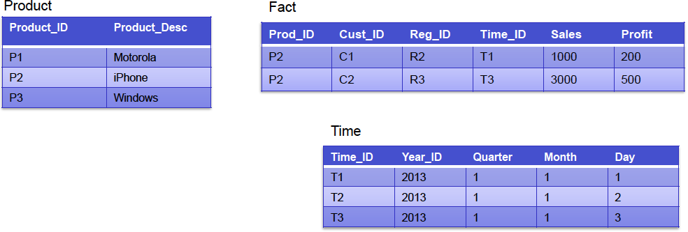

Es ist eine Sammlung von verschiedenen Softwarepaketen, welche es uns ermöglichen die benötigten Daten analysieren und evaluieren können.
Ausgangslage: Eine Firma möchte ein Product lancieren; Welche potenziellen Kunden würden das Produkt kaufen? Lohnt sich das ganze?
Ansatz:
Das heisst aus den bestehenden Daten können Schlüsse gezogen werden.
Das Resultat ist eine Tabelle, welche sehr dynamisch ist. Es wird ermöglicht auf die Daten einzugehen, welche einem besonders interessieren.
Vorteile:
Sternschemata haben 2 Arten von tabellen:

In der Mitte sind die Fakten, welche keine Bedeutung haben. Die Dimensionstabellen erklären dann was die Kennzahlen genau bedeuten.
Faktentabellen: Beinhalten harte numerische Attribute; bei Verkäufen, was und wieviel. Sie sind also sehr schmal, aber seeeeehr lang.
Kennzahlen sind die Grundlage für fachliche Auswertung:
Kennzahlen sind Aggregate über einen bestimmten Zeitraum, d.h. keine Einzelbetrachtungen. Es interessiert uns nicht was Herr Meier gemacht hat, es interessiert uns wieviele Produkte X am Tag Y in der Ortschaft Z abgesetzt wurden.
Sie geben den Kontext zu den Fakten
Liste aller Verkäufe von iPhones in Zürich

SQL:
SELECT sales, profit
FROM fact AS F, product AS p, region AS r
WHERE f.prod_id = p.prod_id
AND f.res_id = r.region_id
AND p.prod_desc = 'iPhone AND r.city = 'Zurich'
=> Easy
Liste aller Verkäufe von iPhones pro Kanton?
SQL:
SELECT SUM(sales), SUM(profit), state
FROM fact AS F, product AS p, region AS r
WHERE f.prod_id = p.prod_id
AND f.res_id = r.region_id
AND p.prod_desc = 'iPhone
GROUP BY r.state
Hierarchische Beziehung: Produkt -> Subkategorie -> Produktkategorie
Hierarche von unten nach oben traversieren
-><-
Drilling in SQL ist das Hinzufügen und Wegnehmen von GROUP BY
Ausschneiden von Scheiben aus einem "Cube"
Fast jedes Sternschema enthält eine Zeitdimension
Der Datentyp DATE stellt zu wenige explizite Merkmale zur Verfügung.
Warum?
Normalerweise kann man das berechnen, aber das Kernziel hier ist dass man denormalisiert und die Abfragen somit beschleunigen kann.
Wie wird sie gebaut? Sie werden durch Skript erstellt. Man braucht keine Informationen von extern. Es ist dann egal, wenn manche Tage nicht mit einem Fakt verbunden sind.
Es werden oft Daten von den letzten 10-20 Jahren gespeichert.


Wenn mehrere unterschiedliche Fragestellungen sollen ausgewertet werden, evtl. mit verschiedenen Sternschemata
"A conformed dimensions is a dimension that has exactly the same meaning and content when being reffered from different fact tables"